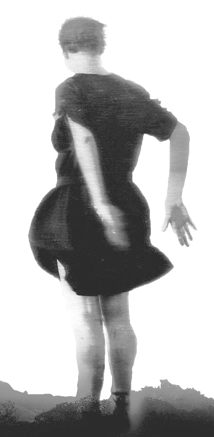
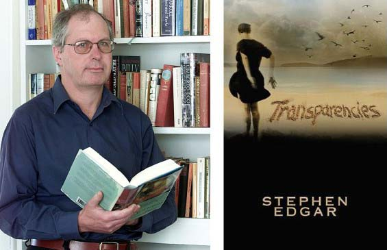

|
Transparencies : Stephen Edgar |
|||
 |

Book Description On
slender toes
Down
by the water’s edgeTwo egrets effortlessly hold their pose In sedge. They hold their pose. This show, With all chinoiserie’s Appeal, must be illusory. And so It is. Stephen Edgar’s nimble-footed new collection Transparencies extends his exploration of the world’s visual aspect, both in itself and as a screen for the mind’s projections. He questions, in the words of Denis O’Donoghue, ‘the delusion by which we think that reality coincides at every point with its appearances’. The transparencies of the title are both the daylit images of the natural world, in all their hallucinatory strangeness and beauty, and the occasions they offer us to look through them, now into deep time, as in ‘Day Book’ and ‘The Mechanicals’, now into the parallel universe of the dead, as in ‘The Returns’, or into the world within this one, as in ‘There’. Edgar’s poems look out and reach in. They probe, even as they have an exquisite ear. As well as moving poems on his late mother, to whom the book is dedicated, Transparencies has many pleasures. One of them is waiting for the delayed rhyme on ‘David Attenborough’. These poems
hold and play with the reader’s mind and imagination—telescopically and
microscopically.
David Gilbey, Mascara
What Clive James said of a single Edgar poem holds true for poems in Transparencies: clear from moment to moment, and clear in the way that one moment leads to the next, it accumulates so much clarity that you need dark glasses to look at it. Poetry
Notebook 2006 - 2014
ISBN 9780648038702 Published 2017 104 pgs |
|||
| Book
Sample  IJupiter
The harbour’s idle undulations slew And swill their slicks of glaze to make An unimaginable shape in time The mind would ache To contemplate. Above, small figures climb The bridge, aspiring to a simpler view. Down on the upper deck of the toy ferry Now sliding underneath that span, Deep in today’s political polemic, A businessman May miss the news that renders academic That puppet show, and makes unnecessary Proposals he is anxious to embrace, Initiatives already planned, Between the tropics and the poles, between The Ice Age and The Holocaust, juju and mutant gene, Planck’s constant and the curvature of space. Tethered in mid-Pacific still revolves The dateline, dealing out the days Like there was no tomorrow. Each of them Plays and replays Self-replicating hours—a theorem Of endless present it propounds and solves. And here, out from the shadow of the bridge, The ferry surges into this Ceramic swash, whose crazing would defy Analysis. The businessman reads on, but you and I, Illiterates of trade and leverage, And risk too intricate for even Lloyd’s To cover, simply watch the slurs Of gloss and shifting craquelure. They say It’s Jupiter’s Vast mass that draws off, and may hurl our way, A terminating hail of asteroids. Under the Radar Flaring and fading like the blips That flash an instant on a radar screen, The bellbirds’ brilliant little flecks of sound Illumine and eclipse The points where silence has been slung between The branches of the trees. Such flimsy tips To bear the weight it gathers on the ground. As when you wade through water, slowed And heavy, hardly able to progress, Your senses, working through this thick dimension Of stillness, share its mode. Each leaf glint, shadow, bird note, each impress Of foot on twig that snaps beneath its load, More slowly but more clearly holds attention. Once all the world was this. Alone, And dozing through the spell of midday heat, You register that chittering outside, A neighbour’s telephone, The drone of traffic on a further street, The ticking house—each floated overtone Dragged by the soundless groundswell that they ride. And so it was when you were led To where her barely conscious form lay waiting And silence held the burden of the room. And leaning by the bed, You swayed in that abeyance, concentrating To hear far off her scarcely warranted And weightless breathing falter, and resume. Bird in Hand A corner of the eye, or mind: The shadow-sifting trees? The flutter of a blind? There was no breeze. Some flurry in the other room Was meddling with the glare, Which flickered with a zoom And whirring: there, In two dimensions on the wall, A twisting shade transferred The fluster of a small And frantic bird. I raised my arms and waved and fanned It down against the sill, And bringing hand to hand Held it there still, Feeling the urgent feathers push My cradling palms. Outside, At once a rufous whoosh Opened them wide, And the fantail was gone. But for Those moments of close care, I felt that what I bore Was less than air, A nothing formed of heat and flutter, As though my hands might case The pulsing shape of utter Empty space. |
||||
Short Listed Prime Minister’s Literary Award Judges’ comments Stephen Edgar's Transparencies is a commanding demonstration of the poet's signature formal control. In poems that follow strict metrical and stanzaic patterning of his own invention, Edgar demonstrates that formal verse can house great originality and surprise, often through his comic and unexpected detonations of rhyme. But the poems here move beyond mere technical accomplishment into the emotive and tender territory of grief and loss. His self-imposed constraints provide a moving frame through which we see a son's heartache at a mother with 'only one day' remaining to her, 'waiting through the weight of each dead minute'. The poems also rove elsewhere—through film and literature, art and place—always questioning the angles of perception and whether we can trust what we see. This scepticism is frequently turned inward, and we are presented with complex instances of self-portraiture, where the poet looks into the mirror and finds a mortal and fragile subject: 'the holder / of an expiring lease'. Transparencies demonstrates that the immense control Edgar has developed across his body of work and how it has matured into fluid grace. | ||||
Stanzas draw you to the light SIMON WEST Reviews: Stephen Edgar's Transparencies The Australian, January 6, 2018 If you were to imagine poetry in the 20th century as a re-enactment of the Trojan war (fought in the name of what? Beauty? Truth? Self-expression? Mimesis?), then the fiercest and most drawn-out battle would be that waged between free and formal verse. Free verse won the day and the city, but Stephen Edgar is one of a few poets who, like Aeneas, stole from Troy in the hope of founding a new empire. Since the mid-1980s he has been receiving acclaim for poetry written in what loosely may be called traditional rhyme and metre. Why go to all that trouble, and what’s wrong with freedom? For Dante, form mimicked the metaphysical order of the universe. Poets today are shy of metaphysics, but the desire to keep chaos at bay and order our experiences remains constant for those who, like Wordsworth, have ‘‘felt the weight of too much liberty’’. Gwen Harwood said she wrote in strict forms not because she was hostile to free verse but because it was so much harder to strike the creative tension that gives the poem its energy without the constraints of rhyme and metre. In Transparencies (Black Pepper, 90pp, $24) Edgar has mastered a candid conversational style, transparent even. There are few rhetorical flourishes, emotional fireworks or confessionalist dramas, just a thoughtful and articulate individual reflecting on world and self. The poems tend to a page or so in length, structured in eight or nine-line stanzas with intricate rhyme schemes that again, like the transparency, are there without drawing attention to themselves. My own preference would be for more frequent inverted feet, or the occasional dactylic ripple disrupting the march of iambs. There is no denying, however, that form shapes rather than hinders the eloquence of Edgar’s voice.  Stephen Edgar and his book, Transparencies One sense of transparency is allowing light to shine through. Light is a major protagonist of these poems, as active as the artist in creating vision, “the light performs its spectral repertoire / from dawn all day to evening.” It can be both the means of vision and a disruption: “Again, a sudden shaft, / it stabs right through the picture of the day.” Similarly, perspective can be set a whirl by jumping from the everyday to interstellar space. “In which the hours are aeons and the earth / A molten palette fading to a last / Expanse of starlit vacancy as deep / And see-through as the night.” These poems chart the way “the mind / Coils in the gyre of its own consciousness”, but also how that mind finds stability through art, so that the ever present light shines through their stanzas like sunlight streaming into a room. | ||||
Undulations Geoff Page reviews 'Transparencies' by Stephen Edgar Australian Book Review, August 2017
After Stephen Edgar’s nine collections of poetry, the last seven of
which are distinguished by an extraordinary control over metre and
rhyme, a reviewer feels bound to ask how this new book, Transparencies,
differs from its predecessors? There are at least two answers: the
recurrent spirit of the poet’s mother, Marion Isabel Edgar (1922-2015),
to whom the book is dedicated, and the poet’s elegant conviction that
the universe lacks any meaning beyond that which we arbitrarily impose
on it. A third concern - not entirely new - is the unreliability of our
senses, particularly our vision, and how our perception of the world
tends to be layered rather than completed in a single ‘take’. The well-designed cover of Trans-parencies features a painting by Judith Martinez called ‘Rumours of Light’. A woman in a wind-flounced dress stares across what seems to be an estuary. Littoral views like this are recurrent in Edgar’s verse, and a smaller monochromatic version of the painting is used to separate the book’s three sections. ‘Jupiter’, the first poem of the first section, is an introduction to the book’s twin preoccupations (and to Edgar’s poetic techniques for readers who may be unfamiliar with them). The first two lines are vintage Edgar: ‘The harbour’s idle undulations slew / And swill their slicks of glaze to make ...’ A business-man on a ferry is absorbed with calculations and ‘risk too intricate for even Lloyd’s / To cover’. Meanwhile, the poet and his reader merely ‘watch the slurs / Of gloss and shifting craquelure’, before both are reminded that ‘They say / It’s Jupiter’s / Vast mass that draws off, and may hurl our way, / A terminating hail of asteroids.’ That last sentence certainly puts things into perspective, not only for the businessman with his complex calculations, but also for the rest of us. The sardonic rhyme of ‘Lloyds’ and ‘asteroids’ on either end of the stanza is also a typical Edgar touch - as is the use of craquelure’, a word many readers will need to look up, only to discover that, though metaphorical, the term is used accurately. It is characteristic too (but not universally the case) that ‘Jupiter’ is written in a complex stanzaic form of Edgar’s own making, with line lengths varying from dimeter through to pentameter. The device (along with a rhyme scheme to match) creates a sense of complex inevitability even while it also risks being a distraction. It is notable, however, that Edgar’s best poems always end in a powerful image which tends to erase memories of difficulties experienced along the way and thus leaves us with an awareness of the poem as a resonant whole. ‘A terminating hail of asteroids’ is certainly an arresting last line. Another poem of comparable impact is ‘Forest Doxology’. Here, Edgar takes advantage of zoological research by Jane Goodall and programs by film-makers such as David Attenborough to present a disturbing parallel between chimpanzees and human apes. Like us, the chimpanzees murderously hunt in packs; like us, they can stop to admire a waterfall without quite knowing why. The paradox is that chimpanzees con-trive to do both ‘Without the power of speech’. At the poem’s end, after the waterfall viewing, Edgar notes (with a wry nod to Wittgenstein) how: ‘At length they make their way, / Holding a picture memory replays, / Whereof they cannot speak.’ Among the most satisfying poems in Transparencies are those which evoke the poet’s mother’s final months and days. Here, in poems such as ‘Mother’s Day’, ‘On the Beach’, ‘The Sense of an Ending’, and ‘The Art of the Fugue’, we encounter the usual technical expertise, but, on these occasions, see it harnessed to more direct emotions. Edgar re-members, for instance, in ‘The Art of the Fugue’, how ‘Nurses, as ever, came and went. / Small groups of relatives stood round / Their proper beds and by a mute consent / Were mutually and thoughtfully ignored. ’It is these poems (and a number of comparable ones) that persist individually in the memory, like the best poems of, say, Philip Larkin or Robert Lowell, rather than being just a part of a more general impression of extreme accomplishment. In Transparencies, as in other recent collections by Edgar, there are also a few poems which don’t rely on a strict rhyme scheme. It is interesting to ponder their relative effectiveness. Is Edgar letting himself off too easily here and ‘playing tennis without a net’, as Robert Frost argued free verse does? The truth is that Edgar’s verse is never ‘free’. The unrhymed poems still have strict stanza structures, adhere to an iambic metre and feature the same metaphorical density as the others. ‘The Returns’, for instance, is in tercets with a trimeter in the first line and pentameters in the second and third and with virtually no rhyme. It is about citizens returning to a city after being forced to flee by war. ‘The city is still there, / Of course - or rather, another city now, / Which occupies that name as it does the ground, // And people in whose mouths / A speech still recogniz-ably the same / Sounds not quite right, like a fluent foreigner.’ In the few poems where this relative openness appears, the reader senses, with gratitude perhaps, that the poet has not made a prison for himself but is free to move into, and out of, strict form as suits his needs. Transparencies is well up to the standard that Edgar has, in the past twenty years or so, increasingly set for himself. ■  Geoff Page has published twenty-one collections of poetry. Geoff Page has published twenty-one collections of poetry. |